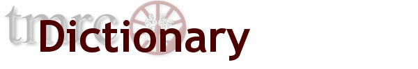

Abridged Dictionary of the TMRC Language
The words defined in this dictionary are the property of the Tech
Model Railroad Club of M.I.T. and all rights to use and define
these words are strictly reserved.
This dictionary is derived from one originally written in 1959
by Pete Samson. It was put on the net by Mark Stiles who added
some entries. The online version was improved by contributions of
several others, including Larry Allen, Richard Polis, Joe Onorato,
Mike Patton, and others. Then this Web version was converted by
Mike Patton. Finally it was converted yet again by Steve Weiss.
Please send any comments, suggestions, or additions to the
TMRC WWW team.
The original 1959 and 1960 editions of the TMRC dictionary are available online at Pete Samson's web page.
- Aaron Burr, The
- TNP crack(ed) express passenger train. Denoted
by zorch.
- Abandon MITCo Now
- cry of friction fans as opposed to traction fans.
- Acquistion
- a means of getting something for nothing.
There are many of these:
- Acquistion A
- you dials your number, and you
gets your/his train.
- Acquistion B
- you dials your number, and you gets the
Outside Line.
- Acquistion C, D, etc.
- see an ancient FOB (vol. IV, no. 3).
- Adjusting Tool
- when in doubt, use a larger hammer.
- Administraton
- 1) Government typesetter's error; 2) Quantum particle
of bureaucracy.
- Advance
- that which if you don't have, you stop until you have.
- AFROTC
- not to be confused with a FROTSUS.
- ARRC
- (pronounced: Arrgh!) the Automatic Railroad Runner Computer in the
same ancient FOB. (See also Kotok's Calamity.)
- A.S.A.P.
- as soon as possible.
- Auto-play
- (spider term) "Many hands make light work"
ala TMRC.
- Bag Biting
- a moby lossage.
- Bag Byting
- using the TMRC PDP-11.
- Bassex and Rowrfolk Counties Railway and Steam Navigation Company
- 1) is dead; 2) was a spectacularly large test track.
- Benedict Arnold, The
- counterpart to the Aaron Burr. As prompt as it is
patriotic.
- Blinking Sickness
- a malady of the Old System. Signalled by a great
thrashing of relays. Suppressed by "Reverse twice, call on, and
go!".
- Blocks 32, 33, and 34
- at once subterranean, subaqueous, and sub-etheric.
See Subway.
- Blurb
- public enlightenment.
- Box
- 1) a group of small cardboard boxes under the layout, labelled from A1 to BB6
bearing electrical refuse; 2) a larger wooden enclosure,
under the east end of the Tower, labelled with railroad heralds,
bearing member's goodies.
- Bridge
- 1) a span between two points not directly connected by ground;
2) a card game played in three phases:
1. bidding 2. play 3. recrimination.
- Broderick
- a station on the TNP. See Freddy.
- Bunky
- 1) that or he who is ridden; 2) a small wheeled cart for
moving about under the layout. The prototype had 5 wheels.
- Burns, Prof. S.K.
- The Club's fa(c)ulty advisor.
- Bylaws
- articles of governing literature at TMRC.
- Cabeese
- defined plural of caboose.
- Capable of Sustained Flight
- try it and see.
- Change Machine
- 1) see that old FOB under "Changed Fund"; 2) a former service
of SNB&TCo; 3) a large green box hanging on the wall, which
does not give change (directly).
- Clod
- beneath our feet.
- Coca-Cola
- 1) sine qua non
2) subject of discussion and confusion, mostly consumption.
- Coca-Cooler
- a cooler for Coca-Cola.
- Coca-Coolie
- a coolie for the Coca-Cola Company.
- Coke Fund
- abolished June 2, 1959. Replaced by Emergency Fund and
Coke Machine Fund.
- Coke Machine
- large red and white object that dispenses goodness of
various flavors (in both senses).
- Coke Machine Fund
- a demonstration of the Club's railroading talent:
an example of Machine legislation; replaced by the
PCMF, another example thereof.
- Comm.
- short for COMMITTEE, or red tape.
- Committee
- long for COMM..
- Constitution
- 1) governing article. 2) (capitalized) Historic memoribilia and
tourist trap near City Square, Charlestown.
- Constraint
- restraint. See KOTOK.
- Coolie
- one who does menial labor; always in demand.
- Crawl-Away
- should have.
- Crock
- 1) a KLUDGE that doesn't work; 2) something which fails
the purpose of its design from the moment of its conception on;
3) something which by normal or accelerated decay is utterly
worthless; 4) the typical TMRC undergraduate bridge player.
- Crud
- cruft.
- Cruft
- 1) a naturally occurring phenomenon at TMRC; 2) that rubbish which
accumulates around the Clubroom; attacking it with a broom
only produces more.
- Cupboard
- a drawer with a door.
- Data General
- home for wayward DEC members; sometimes
appearing with INC., as the opposite of DEC.
- Deburr
- preventitive maintenence for the Aaron Burr.
- DEC
- 1) home for wayward TMRC members; 2) a DEC PDP-11 decrement instruction
3) kind, gracious benefactor to us all.
- Dike
- to attack with dikes (diagonal cutting pliers).
- Disaster
- common occurrence at operation sessions.
- Dismal
- 1) without steam; 2) the weather in Boston.
- Dispatcher
- Controls the routing of trains. Also called Little God. See crock.
- Doorbell
- A way of determining if someone is at the first-floor door.
Usually doesn't work. Last one who can be proven to have entered
the Clubroom must answer. Named "Roger Doxsey Memorial Doorbell" by
Club motion on January 27, 1973.
- Doxsey Spider
- 1) hairy eight-legged beast with nickel-silver legs living
in block 31; 2) a version of Spider
played on a two-by-four (on the two inch side).
- Drawer
- 1) that in the Desk which holds miscellany; 2) those all over
the place that hold members' equipment.
- dt
- time/infinity.
- EAMOTFOSMIC
- Elections And Motions Other Than Frowns Or Smiles Mentioned
in Constitution. See Article 8 of the Bylaws.
- Eccles' Hack
- See Blinking Sickness. Eccles installed
it, graduated, and will deny all knowledge of it.
- Eclipse
- darkens the sky and frightens the natives.
- Emergency Fund
- 1) that which until June 2, 1959 was known colloquially
as the Coke Fund; 2) that which after June 2, 1959,
gains some obscure function of the profits from the
Coke Machine.
- Entripoppity
- short for entropy, or inverse neatness. Is to be conserved
at all cost.
- Epoxy Journal
- train with no conductor.
- Ergo
- therefore. E.g. the System: "Cogito ergo sum."
- Exclusion
- that which doesn't.
- False Occupancy
- false indication of real train or true indication of false train.
- Fanta
- short for "Fantastic Acid". Comes in several flavors.
- Farzies
- (pronounced FAH ZEES) A game played with Coke bottles.
- Flavor
- 1) type (e.g. "What flavor of power does this kludge want?");
2) extreme goodness.
- FOB, or Full Of Bull
- The Club's newsletter (of sorts). Just as the name implies, we
have to give them away. Always worth the purchase price.
- Folly I
- the first of a series of refrigeration devices.
- Folly II
- the second in a series of refrigeration devices.
- Foo
- the sacred syllable (FOO MANI PADME HUM); to be spoken only when
under obligation to commune with the Deity. Our first
obligation is to keep the Foo Counters turning.
- Frazier Award, H. Clark
- The Club's highest award.
- Freddy
- 1) first name of Freddy Broderick,
mentor of the club who lived in the basement of building 10 in
years past; 2) a unit of electrical goodies, semi-infinite in
extent.
- Friodes
- reversible diodes.
- Frob
- a protruding arm or trunnion.
- Frotsus
- See FROB. See also AFROTC.
- Frown
- a fall from the official faces.
- Full Of Bull
- see FOB.
- Function of, a
- post hoc, ergo propter hoc.
- Fuse Alarm
- a buzzer which goes off indicating a fuse is blown. Do not
ignore or disconnect.
- Gifford
- the Club's first advisor.
- General Operating Rules and Qualification Program
- "Members whose duties
are prescribed by these rules must provide themselves with a copy."
- Government
- 1) the aglomeration of Officers.
2) a signed piece of paper associating names and duty numbers,
as listed in the Constitution.
- Governors
- those who don't.
- G.P.'s
- general principles.
- Grand Fils du Carton Noir
- the grandson of the black box.
- Green's Theorem
- for any story, in any group of people there will be at least one
person who has not heard the story. Mention of Green's
Theorem is usually an example thereof.
- Gronk
- to cut, sever, smash, or similarly disable. Gronking parties
are held at random intervals.
- Gronkee
- something which gets gronked.
- Gronker
- something which gronks, also any of the Club's tools.
- Grumph
- expression of mild disgust. Can be produced with a Queen of Spades.
- Grunge
- 1) that which fills the Cambridge atmosphere; 2) to fill the
Cambridge atmosphere.
- Gunch
- to push, prod, or poke at a device which has almost produced
the desired result. Implies a threat to mung.
- Hack
- 1) an article or project without constructive end; 2) work undertaken
on bad self-advice; 3) an entropy booster; 4) to produce, or attempt
to produce, a hack (3).
- Hacker
- one who hacks, or makes them.
- Hair
- complication without end. Gives "hairy" or utterly deep.
- Hearts
- another card game with three phases:
1. the pass 2. the play 3. the lament ("I got scrod!")
- HNO3
- nitric acid.
- HOn3
- three foot narrow gauge in HO scale.
- HOn8
- rewrite of HOn3.
- I.E.
- means i.e.
- JOTTO
- a guessing game of skill. Try "crwth" and see what happens.
- Killianport
- a station on the TNP made uninsurable by
flying Budd cars. A hack on Killian Court.
- Kludge
- a crock that works.
- Kotok
- 1) hereditary treasurer; 2) the ALAN KOTOK AWARD FOR
FISCAL CONSTRAINT; 3) astronomical unit of refrigeration.
- Kotok's Calamity
- disaster which "be fell" the ARRC, clearing the
way for the Windshield Wiper.
- Kotok's Folly
- see FOLLY I and FOLLY II.
- LER
- light emitting resistor. Ohm's law was broken.
- Lose
- to not succeed; to not win. To miss one's station.
To not get advance.
To get into someone else's advance.
- Loser
- chronically succumbs to Domine non sum dignus.
- Magnetic Storm
- magically amputates trains in two, or three, or ....
- Ma Roto
- amazing automation. Public enemy number one.
- MBTA
- Massachusetts Bay Transportation Authority.
- Meeces
- occasional furry visitors who are not urchins.
- MITCo
- transit (sic).
- Minus
- predecessor of ZERO.
- Moby
- universal adjective.
- Mount Fungus Timber Company
- 1) has operating right over TNP track
2) operates all non-standard equipment.
- MTA
- the Metropolitan Transit Authority.
- MTBA
- Mean time between accidents.
- Multiflush
- stop-all-trains-button. Next best thing to the red door button.
Also called FOO. Displays "FOO" on the
clock when used.
- Multischlunker
- changes bei Eisenbahn into marsch, und schnell!
- MUNG
- recursive acronym, Mung Until No Good.
- Murphy's Laws
- If something can go wrong in a (the) system, it will.
- There is always something to go wrong.
- When things go wrong, they do so in the manner
that yields the most difficulty.
- Nova
- bursts from obscurity into blinding brilliance, then disappears
into even greater obscurity.
- Occupancy
- indication of presence of a train.
See FALSE OCCUPANCY.
- Officer
- head of a committee (usually of one).
- person responsible for listed duties in the
Constitution
- one who is officially in charge.
- (capitalized) member of the local constabulary.
- co-signer of government
- Old System
- system which preceded the new system. Famous for its infirmities,
among them the blinking sickness.
- Open House
- pleases the Institute, sells lots of Coke, and occassionally
has trains moving.
- Operating Session
- 12 members versus 1200 relays.
Operators versus Hackers.
The Dispatcher versus the World.
- Outside Line
- formerly the line to East Campus, has been perverted
in recent years to mean the Institute Extension.
- PCF
- Pseudo Computer Fund. Useful for buying parts for our Pseudo Computer.
- PCMF
- Pseudo Coke Machine Fund. Where the Pseudo Coke Profits go.
See Coke Machine Fund.
- Pessimal
- the worst possible result. Opposite of optimal.
- Pile
- a vile of which is usually referred to.
- Plywood Womb
- (archaic). See WOMB BOX.
- Principle of Maximum Inconvenience
- Murphy's Third Law.
- Psiton
- elementary particle carrying the sinister force. These particles
emerge from the eyes of espectators, and even remote and future viewers
(therefore, the number of psitons out of a video camera can be huge!).
Since psitons carry the sinister force, then:
The probability of success of an action/demonstration
is inversibly proportional to the number of psitons
falling on it.
- Punt
- small boat with flat ends.
- Spider move of last resort.
- Reverse Twice, Call On, and Go
- universal pallative for illnesses of the
Old System.
- Rule G
- liberation (pun).
- Samson
- Peter Samson, former member, perpetrator of the original Dictionary
of the TMRC Language.
- S-Board
- A Greenblatt product for better living. See KLUDGE.
The Greenblatt S-Board was replaced by a computer driven one
by Patton in the last hours
before an open house, when the old one failed finally and
catastrophically.
- Scale Time
- measured by the clocks on the D-Board and Coca-Bubblie.
Ten times faster than real time.
- Scalps
- woven into the block forest by elves.
- Scrounge
- 1) to search for, or find, equipment previously without a good
home; 2) to acquire; 3) one who scrounges; 4) function of TMRC.
- Scrounge Cart
- a battlewagon used to cart back booty. Often part and
parcel of the booty.
- SED
- smoke emitting diode. A friode that lost the war.
- Sixty-Nine
- reset to zero.
- Smile
- rarely given, almost never deserved.
- Snarf
- to grab something spontaneously or without permission.
- SNB&TCo
- an institution serving TMRC members for many years.
- Spider
- solitaire extraordinaire. For 2 or more persons.
See also DOXSEY SPIDER.
- Subway
- Blocks 32, 33, and 34. A convenient way to make a train
disappear.
- Supervisor to Worker Ratio
- approaches positive infinity.
- System, The
- unnecessary; after all, we could all make model airplanes.
- S&P
- source of signals? and power?.
- Tarantula
- hairy spider.
- Temporary Committee
- TMRC's only permanent sitting committee.
- Three Hole Punt
- dying gasp. See Punt.
- TMRC
- The Midnight Requisitioning Committee. Other known
alias: Tech Model Railroad Club.
- TMRC Standard Time
- five minutes ahead of Eastern Standard Time.
- TMRC Standard Tool Butter
- all tools at TMRC are made
from this losing material.
- TNP
- Tech Nickel Plate Railroad.
- Tool
- 1) to set one's brain to the grindstone; 2) a human edge;
3) implements for work that don't.
- Track-Cleaning Car
- another Greenblatt product for better living.
See KLUDGE.
- Tucker, Carleton
- our second faculty advisor.
- Two Hole Punt
- act of desperation. See PUNT.
- Urchin
- chief product of Cambridge and our Nation's first line of defense.
Also our Nation's first line of offense.
- Verzuh
- 1) a mythical place under the mountain; 2) Professor who built
the Whirlwind computer.
- WECo
- source of electrical goodies.
- WECo Card
- scrap paper regularly mailed to us by WECo.
- Whale
- a large hill, thoughtfully provided by Nature to separate Berkmannville
from Sawyer Junction. Collapsed in earthquake of 1974.
- Win
- opposite of lose.
- Window Siding
- 1) true test of locomotive mettle. 2) ramp on which rolling
properties of cuts of cars are often tested.
- Windshield Wiper
- ask JEM about plunger line switches.
- Winner
- one or something that wins; very rare at TMRC.
- Womb Box
- from PLYWOOD WOMB. Storage space for equipment.
- Zero
- 1) a turkey; 2) one whose sum total is zero.
- Zorch
- 1) to attack with an inverse heat sink; 2) to travel, v approaching c.
- 9TH, The
- a level of communication attained most eminently by L. van Beethoven.
TMRC Standard Units
these units are on par with the farad for capacitance,
i.e. they are so incredibly large that they are almost never
achieved.
- Allen
- the unit of pessim.
- Augean
- the unit of B.S. Equivalent to 30,000 Bull Years.
- Bennett
- the unit of overdesign. Measured in capacitor clamps.
- Blatt
- the unit of GREENBLATT.
- Comuzzi
- the unit of crockitude. Alternate spelling Confusi.
- Doxsey
- the unit of sarcasm.
- Eggers
- the unit of parsimony.
- Emery
- the unit of miss-spent energies. Equals one if all energy wasted.
Approaches two at TMRC.
- Freddy
- a unit of electrical goodies.
- Gorin
- a unit of raucous noise.
- Herbie
- a unit of scrap germanium.
- Kotok
- the unit of refrigeration.
- Kotok Points
- the unit of coke bottle collection.
- Nelson
- a unit of hackery.
- Patton
- the unit of delay.
- Purbrick
- the unit of over-construction.
- Russell
- the unit of trivia.
Tech Model Railroad Club of

MIT Room N52-118
265 Massachusetts Avenue
Cambridge, MA 02139
|
+1 617 253-3269
Email: tmrc-web@mit.edu
|
|
|